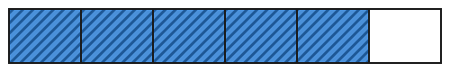

Einen Bruch darstellen
Mit einem KI-Tutor lernen
Ein KI-Tutor erklärt dir diese Seite und hilft dir bei den Übungen. Wähl deinen Assistenten:
Mit Claude öffnen Mit ChatGPT öffnen Mit Mistral Vibe öffnen
Du nutzt dein eigenes Konto beim Anbieter. Der Assistent ist kein Angebot von lernapps.net: lernapps liefert nur Inhalte und Übungen. Die Wahl gilt für alle Seiten, nur auf diesem Gerät.
Einstieg
Auf der letzten Seite hast du aus einem Bild einen Bruch gemacht. Jetzt drehst du es um: Du bekommst einen Bruch und zeichnest den Anteil. Im Text schreiben wir einen Bruch manchmal mit Schrägstrich, zum Beispiel 5/6. Das ist derselbe Bruch wie : „fünf Sechstel“. Du brauchst nur natürliche Zahlen und das Teilen (natürliche Zahlen auf der Lernlandkarte).
So gehst du vor
- Lies den Nenner: Er sagt, in wie viele gleich große Teile das Ganze geteilt ist.
- Lies den Zähler: Er sagt, wie viele dieser Teile du färbst.
- Färbe genau so viele Teile. Welche es sind, ist egal, sie müssen nur zum selben Streifen gehören.
Beispiel
5/6 färben
Der Nenner ist 6: Der Streifen hat 6 gleich große Teile. Der Zähler ist 5: Du färbst 5 davon.

So sieht der Bruch fünf Sechstel am Streifen aus.
Quelle: eigene Zeichnung. Lizenz: CC-BY-4.0.Übung
Gleich siehst du einen Streifen. Er ist schon in gleich große Teile geteilt. Tippe auf die Teile, die du färben willst, und drücke dann „Prüfen“. Mit „Neue Aufgabe“ bekommst du andere Zahlen.
Aufgabe Nr. 1
Aufgabe Nr. 1
Der Streifen hat 8 gleich große Teile. Färbe den Bruch 1/8.
Lösung
1 Teile gefärbt: 1 von 8 Teilen
Übung
Drei Beispielaufgaben, jede mit ihrer Lösung:
Aufgabe Nr. 1
Eine Tafel Schokolade hat 9 gleich große Stücke. Du isst der Tafel. Wie viele Stücke hast du gegessen?
Tipp
Der Zähler sagt, wie viele Teile gemeint sind.
Lösung
- Der Nenner 9 sagt: Die Tafel hat 9 gleich große Stücke.
- Der Zähler 8 sagt: Du hast 8 davon gegessen.
Richtige Antwort: 8
Aufgabe Nr. 2
Eine Tafel Schokolade hat 5 gleich große Stücke. Du isst der Tafel. Wie viele Stücke hast du gegessen?
Tipp
Der Zähler sagt, wie viele Teile gemeint sind.
Lösung
- Der Nenner 5 sagt: Die Tafel hat 5 gleich große Stücke.
- Der Zähler 3 sagt: Du hast 3 davon gegessen.
Richtige Antwort: 3
Aufgabe Nr. 3
Eine Tafel Schokolade hat 9 gleich große Stücke. Du isst der Tafel. Wie viele Stücke hast du gegessen?
Tipp
Der Zähler sagt, wie viele Teile gemeint sind.
Lösung
- Der Nenner 9 sagt: Die Tafel hat 9 gleich große Stücke.
- Der Zähler 3 sagt: Du hast 3 davon gegessen.
Richtige Antwort: 3
Übung
Drei Beispielaufgaben, jede mit ihrer Lösung:
Aufgabe Nr. 1
Eine Pizza ist in 6 gleich große Stücke geschnitten. Du isst der Pizza. Wie viele Stücke sind noch übrig?
Tipp
Wie viele Stücke gab es am Anfang? Wie viele davon hast du gegessen?
Lösung
- Die Pizza hat 6 Stücke, davon hast du 4 gegessen.
- Übrig sind 6 − 4 = 2 Stücke.
Richtige Antwort: 2
Aufgabe Nr. 2
Eine Pizza ist in 9 gleich große Stücke geschnitten. Du isst der Pizza. Wie viele Stücke sind noch übrig?
Tipp
Wie viele Stücke gab es am Anfang? Wie viele davon hast du gegessen?
Lösung
- Die Pizza hat 9 Stücke, davon hast du 6 gegessen.
- Übrig sind 9 − 6 = 3 Stücke.
Richtige Antwort: 3
Aufgabe Nr. 3
Eine Pizza ist in 10 gleich große Stücke geschnitten. Du isst der Pizza. Wie viele Stücke sind noch übrig?
Tipp
Wie viele Stücke gab es am Anfang? Wie viele davon hast du gegessen?
Lösung
- Die Pizza hat 10 Stücke, davon hast du 4 gegessen.
- Übrig sind 10 − 4 = 6 Stücke.
Richtige Antwort: 6
Übung
Lösung
Der Streifen hat 5 gleich große Teile, 6 davon sind gefärbt.
Das geht nicht. Man kann nicht mehr Teile färben, als der Streifen hat.
Der Streifen hat 6 gleich große Teile, 5 davon sind gefärbt. richtige Antwort
Der Nenner 6 zählt die Teile des Ganzen, der Zähler 5 die gefärbten.
Der Streifen hat 11 gleich große Teile.
Zähler und Nenner werden nicht addiert. Die Teile des Ganzen zählt allein der Nenner.
Fünf Sechstel heißt, das Ganze ist in 6 gleich große Teile geteilt und 5 davon sind gemeint.
Mehr dazu:
Übung
Lösung
Richtige Antwort: Die Aussage stimmt.
Der Nenner 6 sagt, wie viele gleich große Teile es sind. Der Zähler 2 sagt, wie viele davon du färbst.
Mehr dazu:
Übung
Lösung
Richtige Antwort: Die Aussage stimmt nicht.
Es ist umgekehrt. Der Nenner 8 sagt, in wie viele Teile das Ganze geteilt ist, der Zähler 3, wie viele du färbst.
Mehr dazu: